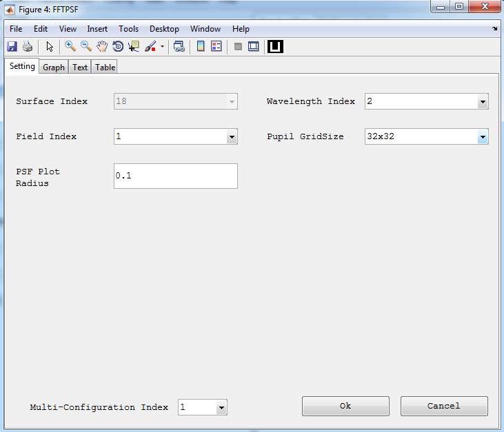

FFT PSF

Purpose:
Display the point spread function of the system. It is based on the chirp Z-transform FFT algorithm.
Setting:
Settings |
Description |
Remarks |
Surface Index |
The surface index used to compute the OPD. |
Currently it is not functional and set fixed to the image surface. |
Field Index |
Index of the field value for the rays to be displayed in the layout. |
A single index should be selected. |
Wavelength Index |
Index of the wavelength value for the rays to be displayed in the layout. |
A single index should be selected. |
PSF plot radius. |
Specify the radius required for the PSF plot. Changes the sampling distance in the focal plane. |
CZT FFT allows the decoupling of the sampling in the pupil plane from that in the focal plane. |
Pupil Grid Size |
The sampling grid size of the entrance pupil. |
Created with the Personal Edition of HelpNDoc: Single source CHM, PDF, DOC and HTML Help creation